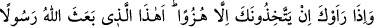
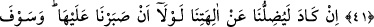
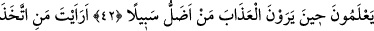
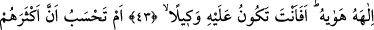
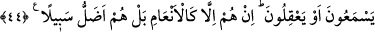

KÖTÜ DUYGULARINI İLÂH EDİNENİ GÖRDÜN MÜ?
41. Seni gördükleri zaman: “Bu mu Allah’ın peygamber olarak gönderdiği!”
diyerek hep seni alaya alıyorlar.
42. “Şâyet ilâhlarımıza inanmakta sebat göstermeseydik, gerçekten bizi
neredeyse ilâhlarımızdan saptıracaktı” diyorlar. Azabı gördükleri zaman, asıl kimin
yolunun sapık olduğunu bilecekler!
43. Kötü duygularını kendisine ilâh edinen kimseyi gördün mü? Sen (Rasûlüm!)
ona koruyucu olabilir misin?
44. Yoksa sen, onların çoğunun gerçekten (söz) dinleyeceğini yahut düşüneceğini
mi sanıyorsun? Hayır, onlar hayvanlar gibidir, hatta onlar yolca daha da sapıktırlar.
Ey Muhammed! Kureyşliler “Seni gördükleri zaman” hakir gören ve küçümseyen bir
üslupla: “Bu mu Allah’ın” aleyhimize delil sâbit olması için kendisini bize
“peygamber olarak gönderdiği!” diyerek hep seni alaya alıyorlar.” Yâni onlar îmânı
terk etmek ve geçersiz şüpheler ileri sürmekle yetinmediler, bilakis Rasûlullah (s.a.)’i
gördüklerinde O’nu hafife almayı ve alay etmeyi de buna eklediler.
Bu söz, Ebû Cehil’in Ebû Süfyân’a söylediği “Abdümenâfoğulları’nın peygamberi bu
mu!” şeklindeki sözdür.
et-Te’vîlâtü’n-Necmiyye’de der ki: “İşâret etmektedir ki his ehli nübüvveti ve risâleti
zahirî his ile göremezler. Çünkü onlar ancak Allah’ın nûruyla desteklenmiş basîretle
idrâk edilir. Onlar ise göz bakımından kördürler. Kendilerinin ulaşamadıkları nübüvvet
ve risâlet kelâmını Rasûlullah (s.a.)’den işitince onu sâdece alaya aldılar ve alay
ederek: “Bu mu Allah’ın peygamber olarak gönderdiği!” O da bizim gibi yemeye ve
içmeye muhtaç bir beşer!” dediler.
Mesnevî’de der ki:
Yazıda “şîr” (aslan) “şîr” (süt)e benzese bile, sen temiz kişilerin işini kendinle
kıyaslama
Bütün dünya bu yüzden yoldan çıktı; Hak abdallarından pek az kişi haberdar oldu